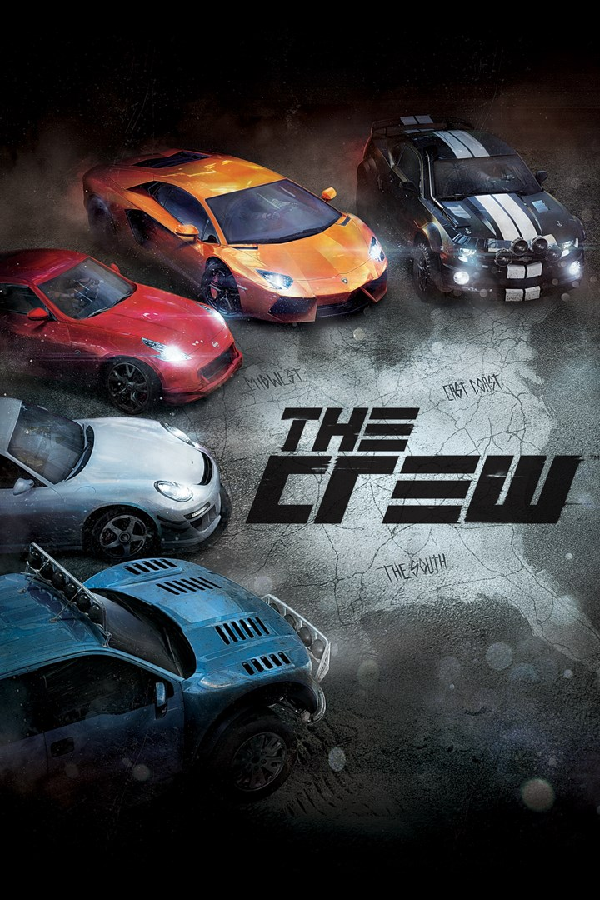

|  | |
| Playtime | Not Played |
| Last Activity | Never |
| Added | 5/7/2025 4:42:24 |
| Modified | 5/7/2025 5:11:45 |
| Completion Status | Not Played |
| Library | Playnite |
| Source | Steam |
| Platform | $PC (Windows) |
| Release Date | 12/2/2014 |
| Community Score | |
| Critic Score | 62 |
| User Score | |
| Genre | MMO Racing |
| Developer | Ivory Tower Ubisoft Reflections |
| Publisher | Ubisoft |
| Feature | Controller Support Full Controller Support Multiplayer Single Player |
| Links | PCGamingWiki Official site HowLongToBeat IGDB SteamDB MobyGames Wikipedia WSGF |
| Tag | Action America Arcade Atmospheric Automobile Sim Babel Contemporary Co-op Direct control Driving First-Person Great Soundtrack Massively Multiplayer Motorcycle Multiplayer North America Offroad Off-roading Online Co-Op Open World Racing Realistic Real-Time RPG Sandbox Simulation Singleplayer Street racing Team-Based Third Person Truck |
The Crew was a 2014 online-only racing video game co-developed by Ubisoft Ivory Tower and Ubisoft Reflections and published by Ubisoft. The game was released for PlayStation 4, Windows, and Xbox One, with an Xbox 360 port developed by Asobo Studio in December 2014. It featured a persistent open world environment for free-roaming across a scaled-down recreation of the contiguous United States and included both role-playing and large-scale multiplayer elements.
Upon release, The Crew received mixed reviews from critics who praised the game's world design but criticized the always-online aspect, which created technical glitches and other issues, the difficult-to-understand user interface, and the presence of microtransactions. The game shipped two million units by January 1, 2015. The first expansion, titled The Crew: Wild Run, was released on November 17, 2015. The second expansion, entitled The Crew: Calling All Units, was announced at Gamescom 2016 and released on November 29, 2016.
The Crew was later followed by two sequels, The Crew 2 in 2018 and The Crew Motorfest in 2023. Ubisoft shut down the game's servers in 2024, rendering it unplayable. The game's shutdown would lead to the game being subject of the campaign called "Stop Killing Games".
The Crew was a racing game set in a persistent open world environment for free-roaming across a scaled-down recreation of the contiguous United States. The map was split into five regions: The Midwest, East Coast, The South, Mountain States, and West Coast. Each region had its own unique geographical features. Six main cities (one in each region, two in the Midwest) were featured in the game: Detroit and Chicago in the Midwest, New York City on the East Coast, Miami in The South, Las Vegas in the Mountain States, and Los Angeles on the West Coast. Various other cities, namely St. Louis, Washington, D.C., New Orleans, Dallas, Salt Lake City, Santa Fe, San Francisco, and Seattle, were also featured in the game. Over thirty smaller cities and towns lined the countryside, such as Nashville, Norfolk and others. It would take approximately 45 minutes in real time to drive from coast to coast in-game.
The single-player campaign was up to 20 hours long, and entailed infiltrating criminal groups with protagonist Alex Taylor (Troy Baker). Players also had the ability to participate in mini-games called Skills Challenges that could be found across the world. They were triggered by driving through them and included objectives such as weaving through gates and staying as close to a racing line as possible for a period of time. Players' scores were automatically saved so friends could try to beat their scores, in similar fashion to how Electronic Arts' Autolog works in games of the Need for Speed franchise. Missions could be played alone, with friends, or with online co-op matchmaking. The multiplayer mode allowed a maximum of eight players to compete in races and other gametypes. There were no in-game loading screens or pauses. Players could also build cars with a tie-in app for iOS and Android.
The Crew creative director Julian Gerighty has called the game a role-playing game with large-scale multiplayer elements. The multiplayer was not separate from the single-player. Players had the ability to form "crews" to race together or against ghost records.
The game required a constant internet connection to play.
The story begins with player character Alex Taylor pursued by local law enforcement near Detroit. After losing the cops, he finds a car loaned to him by his friend and father figure, Harry. Harry explains to him that Alex's older brother and the founder of the 5-10 motor club, Dayton, wants to speak to him. Dayton arrives and orders Alex to drive him to Ambassador Bridge. Once there, Dayton tells him to keep his head down. A sports car pulls up, Dayton goes and talks with the driver, but before he can get back to Alex's car, the driver shoots him and hastily drives off. Alex rushes to Dayton's side as the police arrives to arrest him. Dayton succumbs to his wound, while Alex is charged and later convicted of murder by FBI Special Agent Bill Coburn.
Five years later, Alex, now in prison, encounters FBI Agent Zoe Winters, who informs him that he will be temporarily released if he agrees to cooperate with the FBI in exposing Coburn's corruption, and finding the truth behind Dayton's murder, which has been committed by the new leader of the 5-10s, Dennis “Shiv” Jefferson. In doing so, Alex has to infiltrate the 5-10 and climb up its hierarchy, with ranks named after V engines and Shiv being the “V8” (King V/Big Block/Big Eight). Alex has to work his way to become the “V2” (V-twin), the “V4” (Four Block/Four Banger), and the “V6” (Hard Six).
After getting released from prison, Alex accepts his first mission to help the Detroit 5-10 lieutenant Troy. After doing several missions for him, Alex is sent to St. Louis to kill that city's V2. Alex and Zoe fake the V2's death, but Troy finds out that she is still alive and proceeds to kill her himself. Alex then gets a call from Herschel Craig, the Chicago 5-10 and Troy's rival. Craig asks Alex for help to claim territory from Troy. Alex is able to get his 5-10 ink by helping Craig recover a car smuggled from Europe. Alex is sent to New York City soon after to help a V6 and Shiv's childhood friend, Eric Tsu .
Alex goes to New York and is reunited with Harry, who agrees to help him. Alex gets an off-road vehicle and meets Eric, racing him and later doing missions for him. Meanwhile, Zoe and Alex are suspicious of Harry when he gets secretive. As it turns out, car shipments for the 5-10s went missing, and Harry had been behind them. It is later revealed that Harry is helping Dayton's girlfriend, Connie, and her five-year-old son, Ben, by stealing a proper escape vehicle to evade the 5-10s and get out of town after hearing about Dayton's death. Alex also has to do a delivery for a mysterious person, later revealed to be Coburn. Harry has Alex follow him with Connie and Ben in the car so they can flee the city safely. Alex gets his V2 ink and is asked to go to Miami.
Alex goes to Miami and meets Alita, Shiv's ex-girlfriend. After winning a race against her crew, and later Alita herself, Alex is tasked with claiming The South from Cameron “Cam” Rockport, who has been killing various 5-10s to stay in power. Coburn, using a voice scrambler, then calls Alex for help in taking down Shiv. After winning the South from Cam in a race, Alex notices Coburn's plan of killing Cam and saves him. In return for the rescue, Cam comes to support Alex after catching up on the latter's plan to take down Shiv. Afterwards, Shiv notices Alex's activities, giving him the V4 ink and sending him to Las Vegas.
In Las Vegas, Alex meets Roxanne, a technology whiz whose missing sister, Daria, joined the 5-10s. After several missions, including one revealing that Daria had been killed by Shiv sometime before, Zoe finds out that Coburn is selling impounded contraband. She then orders Alex to travel to Death Valley to collect evidence against Coburn. After collecting sufficient evidence, Coburn eventually shows up. Alex proceeds to chase Coburn across Las Vegas, and eventually Zoe arrests the corrupt FBI agent for a slew of charges, including his involvement in Dayton's murder. With Coburn finished, Alex gets a call from Shiv, saying he has been invited as a V6 to "The 5-10 Face-Off" on the West Coast.
Alex goes to Los Angeles and meets Vincent, a former pro racer. Vincent agrees to help Alex, but Shiv sabotages Alex in the races. With the help of his crew, Alex overcomes all these odds and manages to win. Shiv discovers Alex's desire of vengeance and sends his henchmen to go after Alex. Alex escapes and goes to Shiv's victory party with the intent of assassinating him, but Alex realizes that the people he has met before are now his new family. Refusing to kill Shiv, Alex suggests to settle it in a race instead. At the end of the race, Alex wins, but Shiv refuses to give up. As the police arrives, Shiv pins the blame on Alex, swearing he will kill Alex for selling him out, leading up to a chase along the coast.
At the end of the game, Shiv is confronted by the police as his car is totaled. In the subsequent epilogue, Alex explains his love for racing as he is named the new V8.
The Ubisoft Ivory Tower development team included former Eden Games employees, and received assistance from Ubisoft Reflections. The game was planned with the intention to use the new consoles' social and cooperative play features. On 13 August 2014, Ubisoft confirmed that the game would be released on the Xbox 360 the same date as the other versions, with Asobo Studio leading the development and Ivory Tower, Ubisoft Reflections and Ubisoft Shanghai providing support.
The Crew used Dunia as its video game engine modified with Ubisoft Ivory Tower's proprietary tools.
On 21 July 2014, Ubisoft released a closed beta of The Crew on the PC for a limited time only. The beta allowed players to play a portion of the story-driven missions in the Midwest and East Coast and free roam the entire United States of America at their own pace. Cars and a variety of other things such as driver levels and specifications for cars were limited. The second closed beta for PC took place from 25 to 29 August 2014. A PlayStation 4 and Xbox One console beta was released on 30 September 2014. Another closed beta for PlayStation 4 and Xbox One took place on 6 to 10 November 2014. An open beta for Xbox Live and PlayStation Network members also took place from 25 to 27 November 2014. As part of UBI30, a promotion which would bring seven Ubisoft free games to PC in 2016 as part of Ubisoft's 30th anniversary, the game was free to download from Uplay from September 14 to mid-October 2016, while the Xbox One version was made available free to Xbox Live Gold subscribers as part of Microsoft's Games with Gold program from June 16 to July 15, 2016.
The soundtrack for The Crew was composed by Joseph Trapanese. The track "Heavy As a Feather" was used in the official launch trailer for The Crew.
The Crew: Wild Run was the first expansion pack to the 2014 game. It was developed by Ubisoft Ivory Tower and published by Ubisoft for PlayStation 4, Windows, and Xbox One. The expansion was announced at E3 2015 during Ubisoft's press conference. It was released on November 17, 2015.
Adding to the base gameplay, the expansion introduced motorcycles and a range of new cars, and new vehicle specifications such as monster trucks, drift cars, and dragsters, as well as a new multiplayer event, The Summit. In addition, the release of the expansion introduced a graphical overhaul for the game, via an update available to all players whether or not they owned the expansion.
Simultaneously with the DLC release, the game received a mandatory free update for all players. The update includes an "overhaul", which many players believe was a downgrade to the game's graphics. It changed/broke many of the game mechanics, i.e. physics of vehicles.
The Crew: Calling All Units was the second expansion pack to the 2014 game. It was announced at Gamescom 2016 and was released on November 29, 2016, for PlayStation 4, Windows, and Xbox One alongside the Ultimate Edition, which bundled the base game, all the previously released downloadable content, and both Calling All Units and Wild Run expansions.
In Calling All Units, the player had the ability to play as a police officer, tasked with arresting street racers and smugglers. The expansion introduced a great number of police equipments as well as various types of cars for this purpose, in addition to more vehicles.
On December 14, 2023, Ubisoft delisted The Crew and its expansions from digital platforms, suspended sales of microtransactions, and announced that the game's servers would be shut down on March 31, 2024, citing "upcoming server infrastructure and licensing constraints". The servers were shut down as planned on that date. In early April 2024, days after the shutdown, Ubisoft began revoking licenses from players who have bought The Crew without providing refunds or any way to download the game files. The license revocations were criticized for setting a bad precedent for video game preservation and ownership, especially when players discovered that the game had unutilized programming for an offline mode.
The shutdown and revocations led to players review bombing the game's sequels, The Crew 2 and The Crew Motorfest, on Steam.
On the week of the server shutdown, Ross Scott, a YouTuber who created the machinima series Freeman's Mind who has expressed opposition to video game shutdowns like The Crew's in videos uploaded to his YouTube channel since 2015 and had released a video about the game in 2018 noting the game would be shutdown in the future due to its online only nature, launched an initiative called "Stop Killing Games" to encourage players to file a complaint with France's General Directorate of Competition, Consumption & Repression of Frauds (DGCCRF) to act on video game shutdowns, including that of The Crew. In July 2024, Scott's initiative became an active ballot within the European Citizens' Initiative, requiring 1 million signatures for the European Union to consider passing relevant legislation. Within several weeks, the petition had accrued over 200,000 signatures.
On November 4, 2024, two Californians—Matthew Cassell and Alan Liu, who respectively purchased physical copies of the game from GameStop stores in early 2020 and November 2018—filed a class action lawsuit against Ubisoft in the United States District Court for the Eastern District of California. Cassell and Liu accused the company of misleading players into believing that their purchases of the game were permanent instead of buying limited licenses and for "falsely represent[ing]" that the physical copies contained the game's files instead of simply a key to unlock the DRM for the game. In the filed complaint, the two compared the shutdown of the game's servers to a person purchasing a pinball machine and placing it in their home, only to find it years later having suddenly been stripped of its parts, including "paddles" (flippers), the pinball, bumpers, and "the monitor that proudly displayed your unassailable high score", by the pinball machine's own manufacturer, rendering it unplayable.
Ubisoft, in its motion to dismiss the case, emphasized that there was no "unfettered ownership rights in the game" implied when a user purchased the game, and that the shutdown followed a notification period, following terms that were published on the game's retail box and in its digital EULA.
After the shutdown of the game, efforts have been made to make the game functional again. A group of fans known as "The Crew Unlimited" ("TCU"), are currently developing a server emulator. The unofficial server software is being made using dumps of game's network activity from the time that the official servers were available, using a custom DLL file provided by authors of the software. The game will be playable either offline, by hosting the server by the player themselves, or online, by connection to server hosted by TCU.
The Crew received mixed reviews from critics. Critics overall praised the game's immense world, but disliked the game's technical issues relating to its online-only gameplay, as well as its complicated user interface and use of microtransactions. Aggregating review websites GameRankings and Metacritic gave the Windows version 72% based on 7 reviews and 71/100 based on 12 reviews, the Xbox One version 60% based on 14 reviews and 64/100 based on 18 reviews and the PlayStation 4 version 59% based on 37 reviews and 61/100 based on 60 reviews.
Mike Channell from Eurogamer gave the game an 8/10, praising its rich content, worthy side-missions and activities, enormous driveable space, successful blend between the story and the multiplayer, huge variety of scenery and rewarding and entertaining co-operative gameplay, but criticizing its poor story and lead character, "outrageous" AI, as well as the inclusion of microtransactions. He stated that "The Crew is an astonishing achievement, not only because of its vastness but also its level of fidelity and the authenticity of its character."
Matthew Kato from Game Informer gave the game a 7/10, praising the satisfying upgrade and car-purchasing system, as well as the decent voice-acting. However, he criticized the clichéd story and stated that "The Crew feels like an average arcade racer. There are some fun times, but you may be surprised to discover that America is a pretty empty place."
Josh Harmon from Electronic Gaming Monthly gave the game a 6/10, praising the game world, which he stated "has captured the spirit of America" and described the game as "the best open world in a racing game to date". However, he criticized the off-putting microtransactions, as well as poor story-telling and the pay-to-win model of the game. He stated that "Despite delivering an impressive playground, The Crew struggles to build out a worthwhile game experience around it."
Peter Brown from GameSpot gave the game a 5/10, also praising the massive game world, as well as the single-player mission, but criticizing the automatically activated missions, frustrating side-missions, such as the raid car missions and the fleeing missions, as well as outdated graphics, poor physics, AI and user interface, texture pop-in and disappointing cars, buildings and environment models. He also criticized the game for not encouraging players to form a crew to play missions. He summarized the review by saying that "The Crew isn't that good after all. When you can't play due to server issues, you find a new game to play and leave The Crew in your dust."
Despite the mixed reviews, the Academy of Interactive Arts & Sciences nominated The Crew for "Racing Game of the Year" during the 18th Annual D.I.C.E. Awards.
The Crew had shipped 2 million units by January 1, 2015. In May 2016, Ivory Tower announced that the game had been played by over 5 million players. On May 12, 2017, the game had reached 12 million players.
In May 2017, Ubisoft announced its sequel, The Crew 2. It was scheduled to be released worldwide in early 2018 for PlayStation 4, Windows, and Xbox One. In the sequel, the roster of vehicles expands to include planes, boats and motorcycles. The game was released on June 29, 2018.
In late January 2023, Ubisoft announced its second sequel, The Crew Motorfest. It was released on September 14, 2023 for PlayStation 4, PlayStation 5, Windows, Xbox One, and Xbox Series X/S. Unlike the two previous The Crew games, Motorfest is set in scaled-down recreations of the Hawaiian Islands of Oʻahu and Maui.